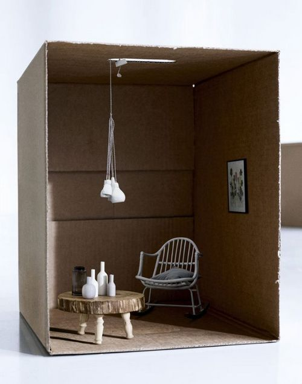
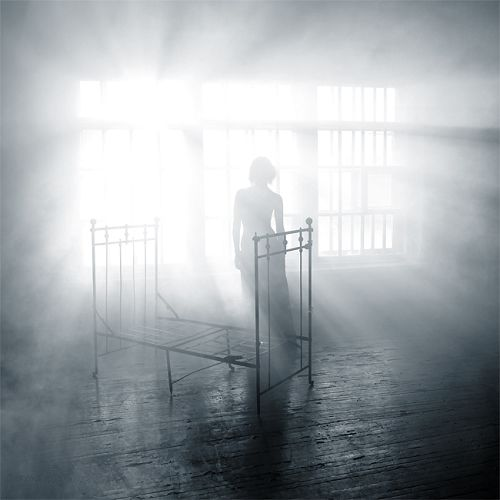

Archives : 2011-11
Both sides, now @ Nov 25, 2011
Both sides, now-Hayley Westenra翻唱1969年Joni Mitchell的版本。

Rows and flows of angel hair
And ice cream castles in the air
And feather canyons everywhere
I've looked at clouds that way
But now they only block the sun
They rain and snow on everyone
So many things I would have done
Clouds got in my way
I've looked at clouds from both sides now
From up and down, and still somehow
It's cloud's illusions I recall
I really don't know clouds at all
Moons and Junes and Ferris wheels
The dizzy dancing way you feel
As every fairy tale comes real
I've looked at love that way
But now it's just another show
You leave 'em laughing when you go
And if you care, don't let them know
Don't give yourself away
I've looked at love from both sides now
From give and take, and still somehow
It's love's illusions I recall
I really don't know love at all
Tears and fears and feeling proud
To say "I love you" right out loud
Dreams and schemes and circus crowds
I've looked at life that way
But now old friends they're acting strange
They shake their heads, they say I've changed
Well something's lost but something's gained
In living every day
I've looked at life from both sides now
From win and lose and still somehow
It's life's illusions I recall
I really don't know life at all
生活，就是不停地被打断。 @ Nov 17, 2011
这个年龄，这个阶段，你必须要面对和处理一些事情，不可能过真空的生活。一面要建设自我的内心世界，一面要平衡外部世界的强行介入。生活，就是不停地被打断。

唱着歌儿下厨。 @ Nov 16, 2011
晚饭时分，传来嘹亮地「少先队员队歌」，忍不住扭头观望，对面男邻居边做饭边大声唱着，一副欢快场景。他们有个上小学的儿子，是不是今天刚开完家长会，勾起了他对自己少年儿童时期的追忆。女主人挺时髦的，仍然长发披肩。奇怪地是，那间新装修的屋子里住了好几个人，都比较年轻，搞不清楚是什么关系。其中有位女士，中午没有开着她的酷派回来，而是开了辆红色法拉利，很拉轰。
哈，听着这超级怀旧的歌声，我做饭的情绪一下子也欢快起来。现在会有多少年轻人下厨呢？放在十年前，我是万万体会不到做饭的乐趣，有些事，到了年纪才有心境去理解，接纳，融入。喜欢现在的自己。
美丽的旺仔 @ Nov 13, 2011
昨晚宠物店老板打来电话，说有条母的英卡发情，它家主人打算让它生育一次。问我是否有意？一口答应下来，睡前又犹豫，生下的小狗会是怎样的狗生？但无论如何，luke一定是欢喜的，雄性世界的生理思维总是一样的吧。
起了大早，带着luke去宠物店相亲。那只叫旺仔的英卡长得美丽，体型比luke小，luke对它一见钟情，百般献媚。它家主人犹豫了，因为luke体型大，担心自家狗狗会难产，把狗狗当孩子养的，担心生病，担心生育后毛色变化。。。焦虑慌张，满头是汗。旺仔的女主人40多岁，紧张得象个孩子，居然还落了泪。。。既然这样，尊重对方主人家意见，各自在宠物店为自家狗狗洗了澡，返回。动物界的缘分好似人类社会，顺其自然的好。
Right to Hope... @ Nov 12, 2011
快乐其实很简单，放下令你不快乐的人或事，怎么快乐，就选择怎样的方式活下去。做一个解决问题的人，而不是制造问题的人。
世间太多的不快乐是因为过度的欲望，生理的物理的，欲念少一些，也可以令自己轻松快乐起来。面对欲望，各人能力不同，当明白自己真正要什么，什么适合自己，也许已是百转千回，上了年纪，不过总好过没有勇气选择，活在矛盾纠结中一辈子。乘人格没有彻底分裂前，让自己和周围的人都能活得简单，快乐。这总不是一种罪过吧？！

虽然，事与愿违。
但是，你一定要更快乐。
DRESS BLOG @ Nov 11, 2011

周末 @ Nov 07, 2011
周末和父母姐姐一起吃了顿饭，是我期待的那种快乐，大家难得聊的欢畅。
周末整理了餐边柜和衣帽间，那叫一个累啊，做家务绝对比上班辛苦。哦，不一样的辛苦，一个消耗体力，一个消耗精力。做家务做到腰酸背痛，上班浑身倒是松弛的，但会有心理压力，时常焦虑。最近备受颈椎问题折磨，去做按摩，按摩师傅下手那个狠纳，到现在，皮肤的酸痛感还未消失。按摩师说：＂昨儿一客人，25岁，已婚，职业主妇，说是每天出门不会超过30分钟。但还是无精打采的。＂我想她可能不做家务，其实做家务也是健身，如果自律能力强，早睡早起，好好安排一下，可以过得很充实。
周末洗了车去接洗澡的狗，出来就下雨了，双倍的悲摧。不过看着整齐的餐边柜和衣帽间，加上快乐的家庭聚餐，也挺平衡的。接下来陆续整理摆放杂物的橱柜和储藏室，耶。我有多勤劳啊，Jessica,呵呵！
日本熏香 @ Nov 03, 2011
新入手Nippon Kodo的乐山白檀和最古老熏香伽罗大观，很喜欢它们的味道。尤其是乐山白檀的味儿（紫色包装），更轻盈，若有似无，很适合女性的感觉。伽罗大观的盘香比常规的盘香要粗，平时用的香座显小。伽罗大观的气味儿更沉着，朴实、天然。


DRESS BLOG @ Nov 03, 2011
刚工作那会儿，有位女性中年同事对我说：“哎呀，你穿得好素啊，你瞧我家女儿（和我差不多年纪）买一件衣服都要2000多块哦....”那是属于20世纪90年代的记忆，当时我很明白她的重点在后面一句。要知道有些话说出来，等于自降分量。
现在已经是21世纪了，审美也逐渐变化着，可我还是穿的比较素，倾向冷色调服饰，偶尔绚丽一把，只是偶尔。这种穿衣心理就好像开会时不情愿坐在前排一样，不要完美，总要留些破绽。但是，我绝对不会对同事说出那番话，也想不起来这样说。
同样是女性中年同事发给我的“2011年上半年最给力名言:
1.笑只是个表情，与快乐无关。
2.思想就像内裤,要有,但不能逢人就证明你有。
3.纯，属虚构。乱，是佳人。
4.我可以选择放弃,但绝不放弃选择。
5.以前，养儿防老。如今，养老要防儿。
6.君子报仇，十年不晚。小人报仇，从早到晚。
7.如今,人们经常需要马桶精神，按一下，什么都干净了。
8.眉毛上的汗水，眉毛下的泪水，你总得选一样。
9.人家有背景，而我只有背影。
10.财富改变不了个性，却可以让人露出本性 。

生活方式 @ Nov 02, 2011
有位老奶奶，与子女住着big house，家里若干辆车。初遇，她牵着一条白色的萨摩耶犬，用一条粗粗的铸铁状的铁链子牵着，那只狗当时不过2个月大。我家卢克头顶有颗脂肪瘤且拖着两条长耳朵，她笑嘻嘻地说：“这狗长得象猪八戒，还戴着顶帽子，哈哈哈...”
@$%^&*@#$%%^*~ 完全接不上她的话，频道不一样？
完全接不上她的话，频道不一样？
她用小区景观池里的水给她家萨摩耶洗澡，越长越大的萨摩耶之后被送走了，它的青少年时期作为玩具在这个家庭里存在过，成年后即失去了价值？
最近老奶奶多次出现在附近的垃圾桶旁，貌似路过，在桶里搜索一番，带走一些废品，未见戴着手套。后来见她背着半人高的布袋子，里面塞满废品。上周某晚我们在小区散步，遇到两个身影在黑暗中，左右手拎着包裹，肩上还背着。走着走着，其中一位坐在花坛边休息，另一位走向附近的垃圾桶...近看，休息的是位男性老人，另一位正是这位老奶奶。
吃苦耐劳，勤劳节俭，中国人颂扬的美德。惯性思维下：不同人不同的生活方式，这与TA拥有多少财富无关。每个人都有选择的权利，没有贫富贵贱之分。也明白了“生活方式”的全部含义，无论你选择以怎样的方式生活，只要自己快乐，且不影响他人，都是无可厚非的吧。有人说：“选择的权利是平等的，选择的能力却天差地别。”